A great sofa can make a living room feel finished almost instantly. The right shape, color, fabric, and placement can turn an awkward room into a cozy space that actually makes you want to sit down. These 19 sofa ideas cover everything from relaxed sectionals and small-space sofas to bold colors, classic silhouettes, and clever layouts.
I have always thought sofas deserve more attention than they usually get. We spend hours sitting on them, watching movies, reading, talking, working, and occasionally pretending we will get up after "just one more episode." So why choose one simply because it looks good online?
The best sofa ideas balance comfort, scale, style, and everyday practicality. Once you understand those four things, choosing a sofa becomes much easier, and a lot less overwhelming than standing in a showroom staring at forty nearly identical gray couches.


How I Would Choose Between These Sofa Ideas
If I had to choose a sofa for a real home, I would start with function rather than aesthetics.
For a small apartment, I would consider a compact loveseat or streamlined sofa.
For a family room, I would look at a sectional or modular sofa.
For a cozy reading space, I would choose a deep sofa with soft cushions.
For a traditional home, I would consider a roll arm or Chesterfield.
For a minimalist room, I would choose a low-profile sofa with clean lines.
For a personality-filled space, I would choose a sculptural or colorful sofa.
Different silhouettes really do suit different comfort preferences, from structured seating all the way to deep, lounge-oriented designs.
The important thing involves choosing a sofa that fits both the room and the people who actually live there, not the version of your household you imagine on a particularly aspirational Pinterest board.
What Sofa Color Should You Choose?
Your sofa color should support the atmosphere you want rather than simply follow whatever color currently dominates social media.
For a calm room, consider:
- Cream
- Warm beige
- Taupe
- Soft gray
- Sage green
For a dramatic room, consider:
- Chocolate brown
- Deep navy
- Forest green
- Burgundy
- Charcoal
For a statement room, consider:
- Rust
- Mustard
- Terracotta
- Rich blue
- Patterned upholstery
Neutral sofas offer more flexibility, while colorful sofas create stronger visual impact. Neither approach automatically wins. Your room, lifestyle, and personality should decide.
How to Make These Sofa Ideas Work in Real Homes
Beautiful inspiration can sometimes make decorating seem much easier than it actually feels. A sofa might look perfect in a huge editorial living room but completely overwhelm a smaller space.
Start with measurements. Check:
- Sofa width
- Sofa depth
- Sofa height
- Doorway width
- Hallway clearance
- Coffee table position
- Walking paths
- Window and radiator locations
Leave comfortable pathways around your furniture. It's worth maintaining clear walkways of roughly 2.5 to 3 feet around furniture where possible.
I also recommend considering your upholstery carefully. A pale linen sofa can look gorgeous, but a busy household might need something more forgiving.
Think about your actual life, not the imaginary version of your life where nobody spills coffee, nobody has pets, and every throw pillow stays perfectly fluffed all year long.
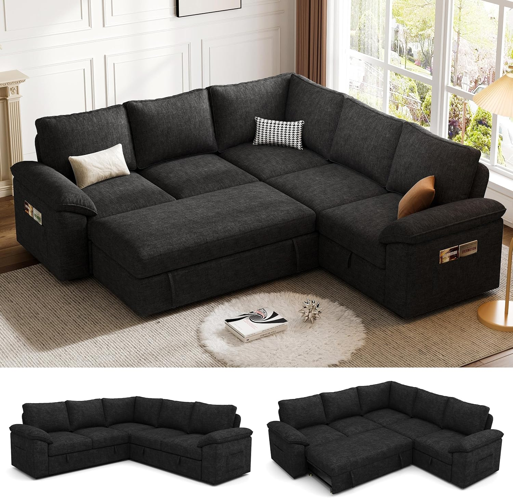
Modular Sectional Sofa With Pull-Out Bed
Shop on Amazon19 Sofa Ideas for a Beautiful Living Room
1. Go for a Sculptural Sofa
If you want your living room to feel more design-forward, choose a sculptural sofa.
Look for unusual curves, rounded arms, exaggerated proportions, interesting bases, or architectural silhouettes.
Sofa trends lately point toward softer, sculptural shapes and relaxed modular forms, with stronger colors, patterns, and more distinctive designs gaining real attention too.
The trick involves restraint. Let the sofa become the star and keep the rest of the room relatively calm.
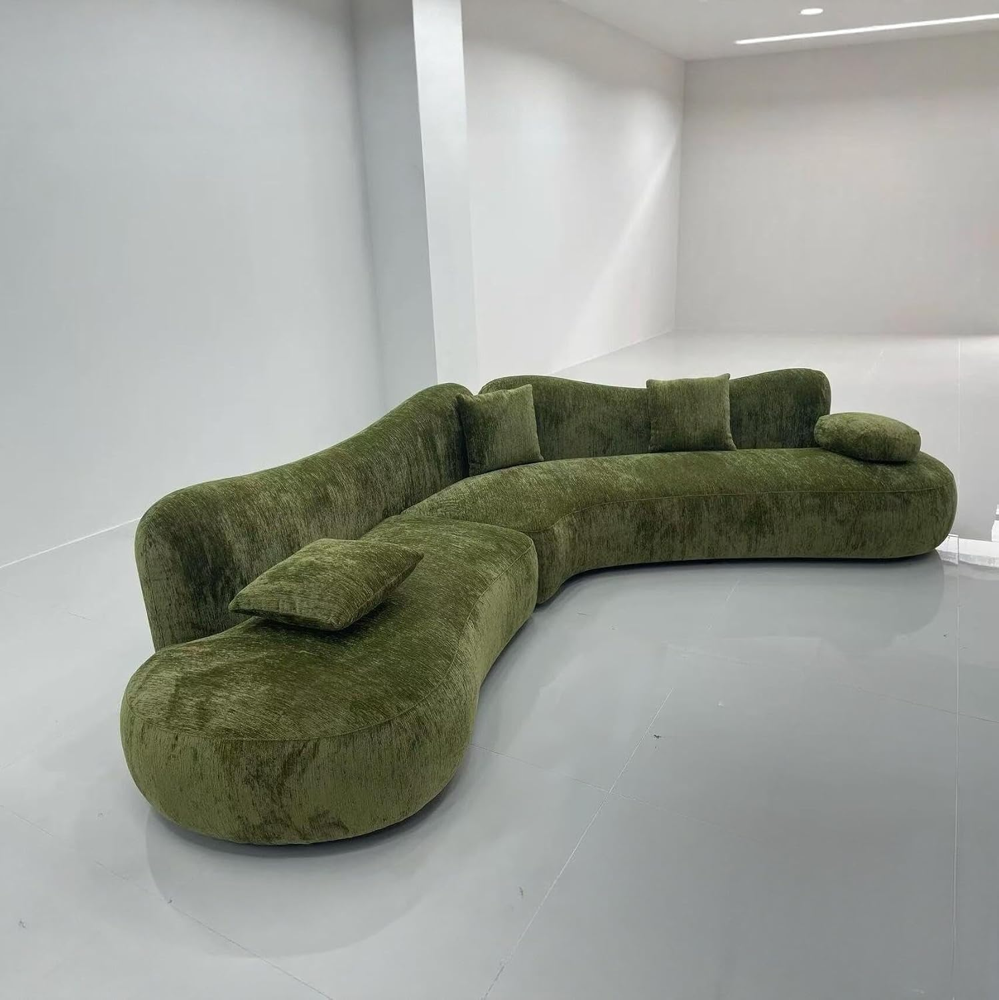
2. Create a Cozy Sofa Corner
Not every sofa needs to face the television.
Create a reading corner with a sofa, floor lamp, small side table, and soft throw. If you have a window with a nice view, orient the sofa toward it instead.
This setup works particularly well in homes where the living room needs to support several activities.
Ask yourself what you actually want to do in the room. Sometimes the best sofa arrangement has nothing to do with the TV.
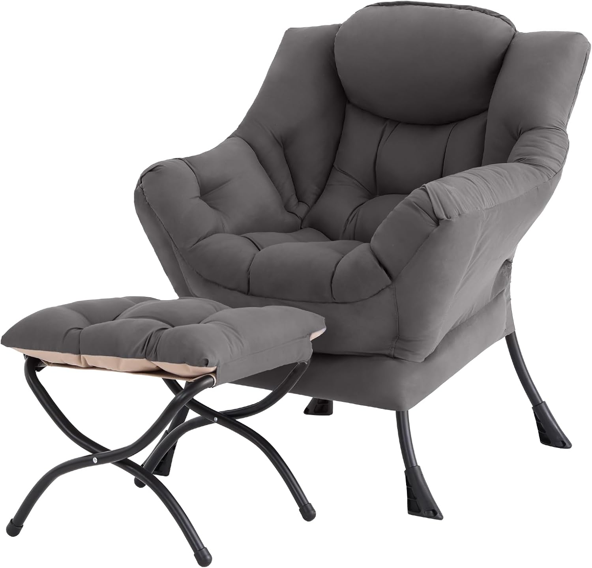

3. Pair the Sofa With Two Accent Chairs
A sofa does not need to do all the seating work.
Two accent chairs opposite or beside the sofa can create a balanced conversation area. You can also choose chairs with a different silhouette to keep the room from looking like you bought everything in one afternoon.
Mixing different seating forms rather than relying on a perfectly matched furniture set tends to read as more collected overall.
I prefer this approach because the room feels collected rather than overly coordinated.
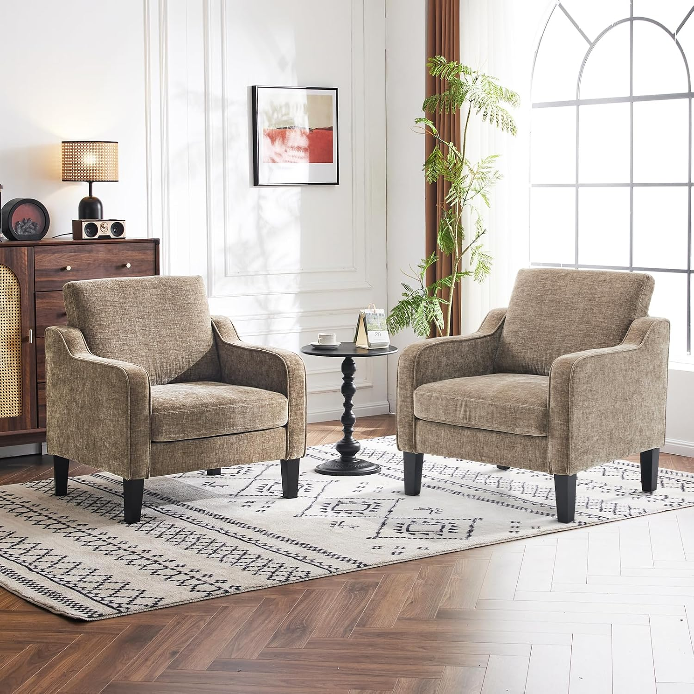

4. Float Your Sofa Away From the Wall
Here is one of the simplest sofa ideas that can change an entire room: stop automatically pushing the sofa against the wall.
Pulling the sofa slightly forward can create a stronger conversation area and improve the visual flow.
Pushing all furniture flush against the walls is a common problem worth avoiding, pulling seating inward instead can genuinely improve intimacy and conversation in the room.
You do not need a giant room to try this. Even a small gap can create a more intentional arrangement, a slim console table behind the sofa can anchor the new position and add a place for lamps or decor.
5. Choose a Mid-Century Modern Sofa
Mid-century modern sofas work because they combine clean lines with enough warmth to avoid looking sterile.
Look for tapered legs, simple cushions, structured arms, and walnut or natural wood details.
I like this style when someone wants a modern room that still feels lived in. Add a vintage rug, ceramic lamp, and a few books and the room instantly gains personality.
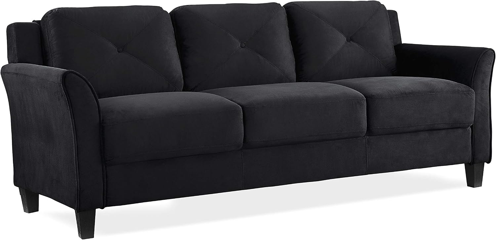

6. Try a Bouclé Sofa
Bouclé adds texture instantly.
The nubby upholstery creates a soft, tactile appearance that works particularly well with curved silhouettes and contemporary furniture.
Keep the surrounding decor relatively simple. Too many competing textures can make the room feel busy.
A cream bouclé sofa paired with wood, stone, and muted textiles can create a beautifully calm living room.
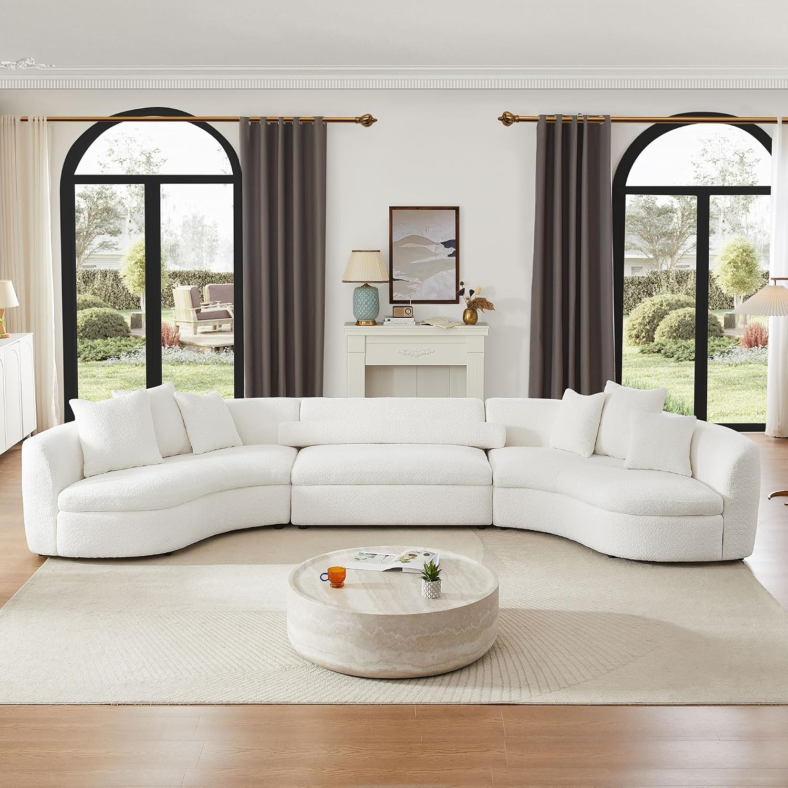

7. Make a Bold Sofa the Focal Point
Why should every sofa disappear into a sea of beige?
A bold sofa can completely transform a neutral living room. Try deep blue, rust, forest green, mustard, burgundy, or even an interesting print.
It's worth testing proportions, depth, and comfort rather than choosing a dramatic sofa based purely on appearance, being prepared to sit on a dozen different sofas just to get a feel for proportions and puff-factor before committing to one.
That advice matters. A statement sofa should still feel good when you actually use it.
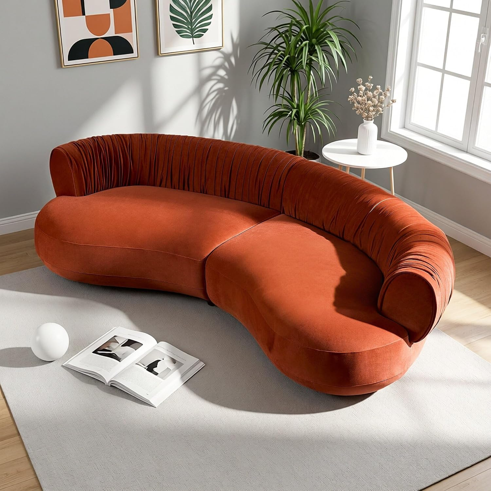

8. Use a Loveseat in a Small Living Room
A loveseat gives smaller rooms comfortable seating without consuming the entire floor plan.
You can pair it with one or two accent chairs instead of trying to squeeze a large sofa into the room.
Compact sofa forms tend to get recommended for small spaces generally, since they can anchor the room without overwhelming its footprint.
This approach also gives you more flexibility. You can angle the chairs toward the loveseat and create a small conversation area.
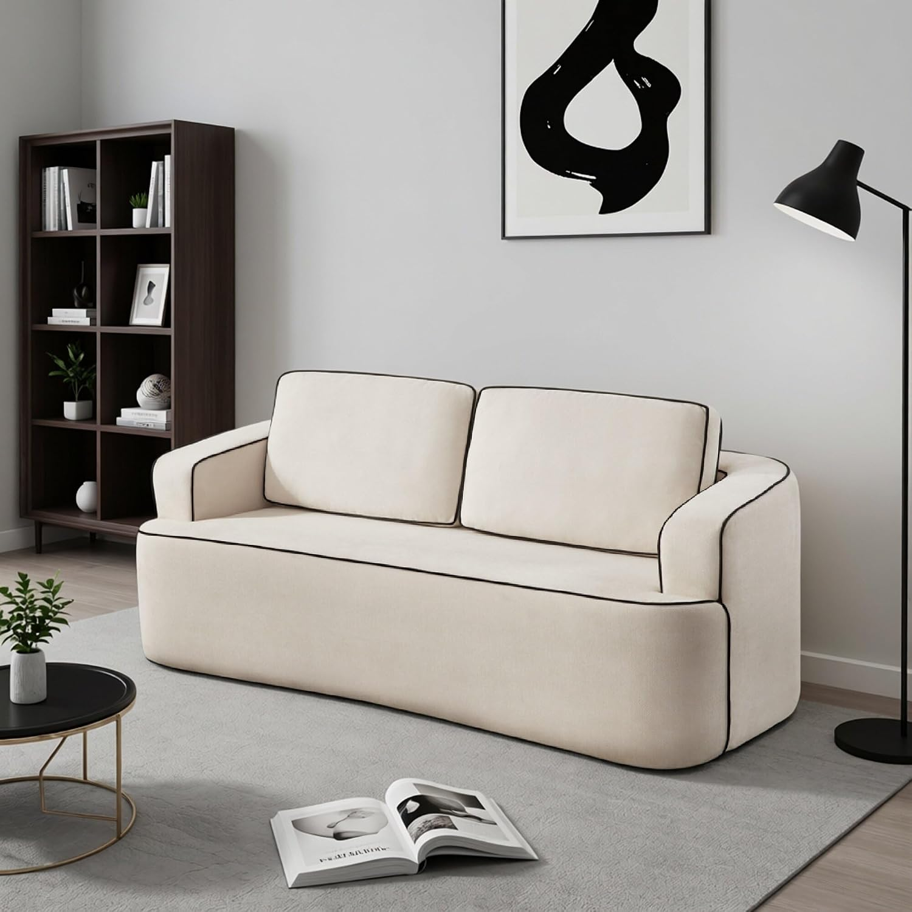
9. Pick a Low-Profile Sofa
Low-profile sofas can make a room feel wider and more relaxed.
Their lower height creates a strong horizontal line across the room. That effect works particularly well in modern, minimalist, and contemporary interiors.
Just pay attention to the rest of the furniture. A very low sofa next to tall furniture can create awkward proportions.
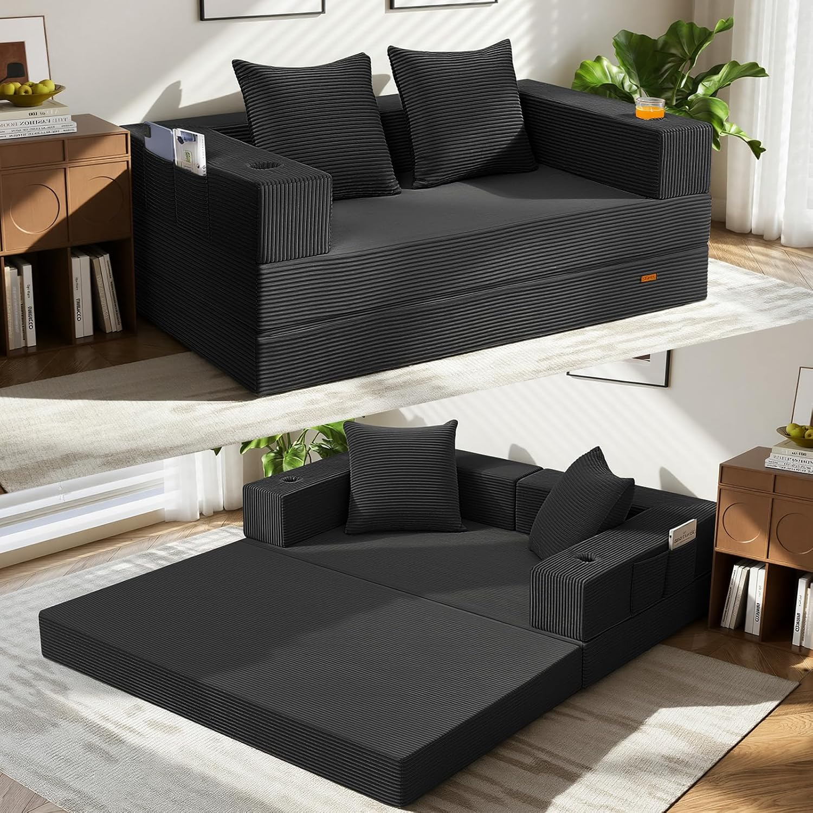

10. Add a Chesterfield Sofa
A Chesterfield brings instant architectural character.
Its deep button tufting, rolled arms, and structured shape create a distinctive look. Leather gives it a more masculine, library-inspired appearance, while linen or velvet can soften the design.
I would use a Chesterfield when the sofa needs to act as a major design feature rather than simply blend into the room.
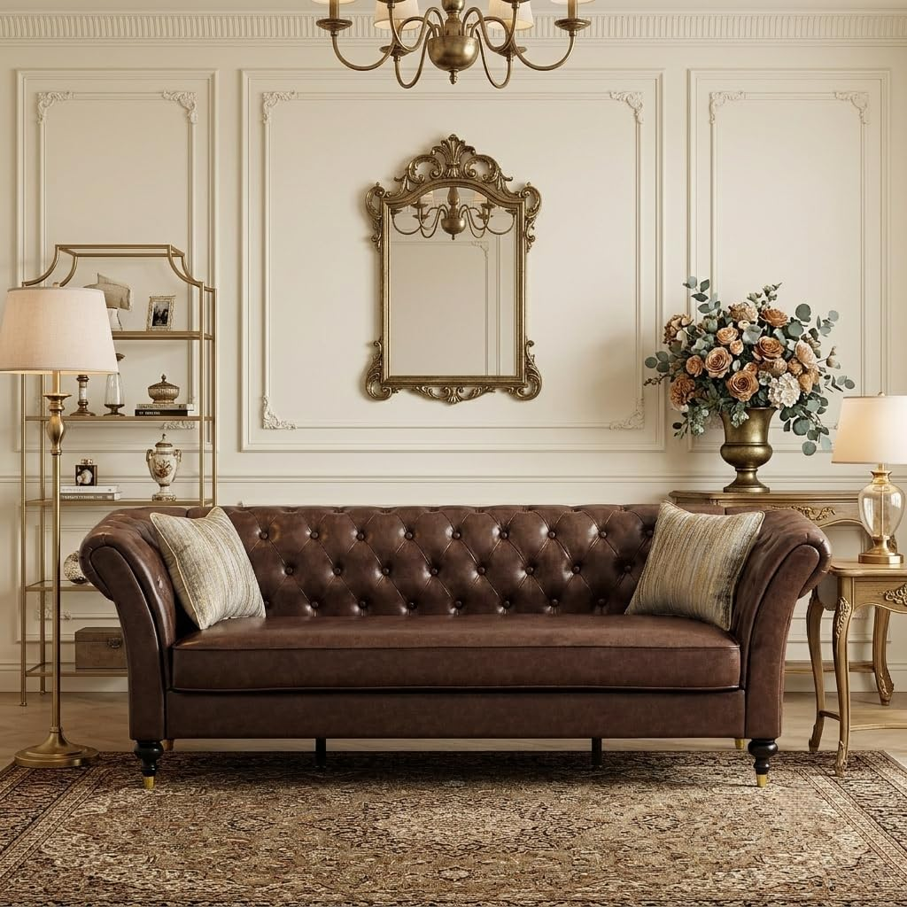
11. Create a Traditional Look With a Roll Arm Sofa
Roll arm sofas bring classic character into a living room.
The rounded arms soften the overall silhouette and work particularly well with traditional, English cottage, farmhouse, and transitional interiors.
You can keep the upholstery neutral for a timeless look or introduce a small floral or striped pattern for more personality.
Statement sofas do not always need dramatic shapes. Sometimes a familiar classic simply does the job better.
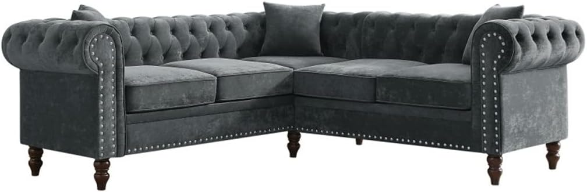
12. Choose a Sage Green Sofa
Sage green gives a sofa personality while remaining relatively easy to decorate around.
It works beautifully with cream, beige, natural wood, warm white, and muted terracotta. I particularly like sage sofas in rooms with lots of natural light.
If you want a colorful sofa but do not want something extremely loud, sage gives you that middle ground.
13. Bring in a Chocolate Brown Sofa
Brown has made a strong comeback in interior design, and I completely understand why.
A chocolate brown sofa adds depth without creating the heaviness that some black furniture can introduce. Pair it with cream walls, natural wood, ivory textiles, and warm lighting.
For a richer room, add burgundy, olive, or caramel accents. You get an inviting palette without turning your living room into a furniture showroom from 2004.
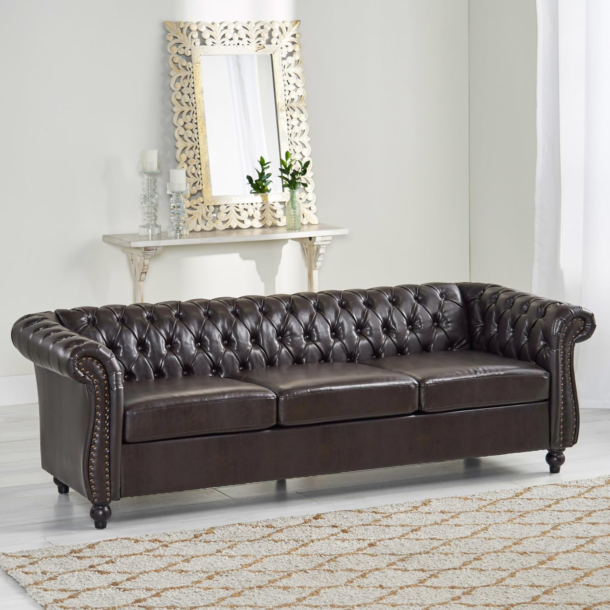
Brown Upholstered Sofa
Shop on Amazon14. Try a Modular Sofa
Modular sofas offer more flexibility than traditional fixed sofas.
You can rearrange individual sections when your needs change. That flexibility helps if you move frequently, entertain often, or simply enjoy changing your furniture arrangement.
Modular sofas are really adaptable pieces that let you reconfigure seating around different activities and room layouts as needed.
That makes modular seating one of my favorite practical sofa ideas for people who do not want their furniture arrangement to feel permanent.
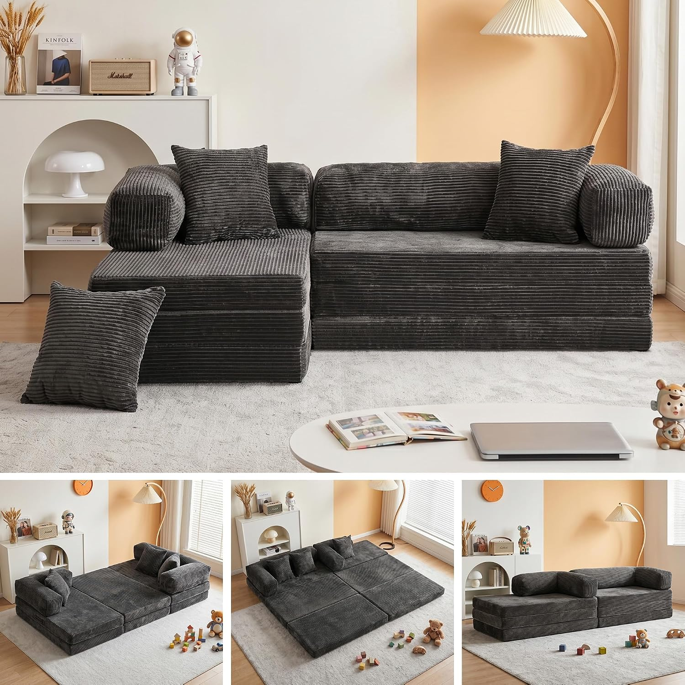
Modular Sectional Sofa
Shop on Amazon15. Use a Sectional Sofa for Family Rooms
A sectional makes sense when you want everyone to have a comfortable place to sit.
The L-shaped design can define a seating area without requiring multiple pieces of furniture. It also works especially well in open-plan rooms because it visually separates the living area from nearby dining or kitchen zones.
Sectionals can work particularly well in open layouts and spaces with limited wall options, since their shape can use awkward areas efficiently.
I would choose a sectional when relaxation matters more than formal entertaining.
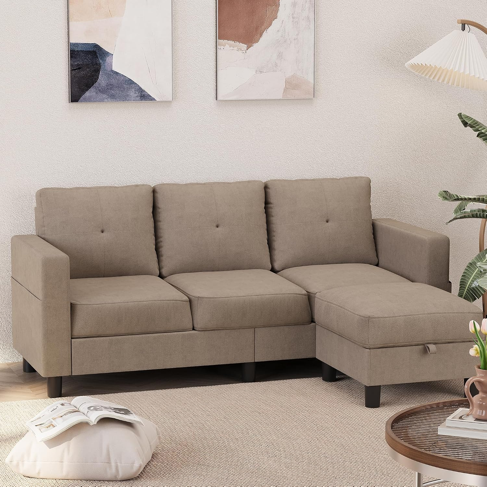
L-Shaped Sectional Sofa With Storage Ottoman
Shop on Amazon16. Add a Classic Cream Sofa
Few sofa ideas feel as timeless as a cream sofa.
Cream works particularly well with warm wood, natural stone, brass, black accents, and muted colors. It can create anything from a relaxed Scandinavian room to an elegant traditional space.
If you worry about stains, choose a performance fabric or a washable option. Beautiful furniture does not need to become a household stress test.
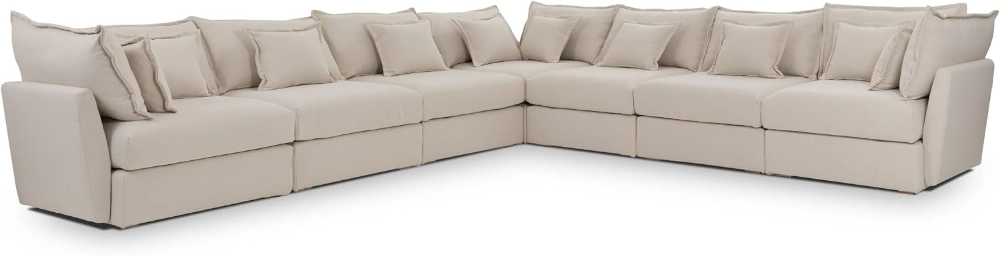

17. Go for a Soft Curved Sofa
Curved sofas add softness to rooms filled with straight lines.
A rounded back or curved silhouette can make a living room feel more inviting without adding extra decoration. Pair one with a round coffee table and curved accent chair for a cohesive look.
You can also use a curved sofa as the focal point in a minimalist room. Let the shape do the decorating.
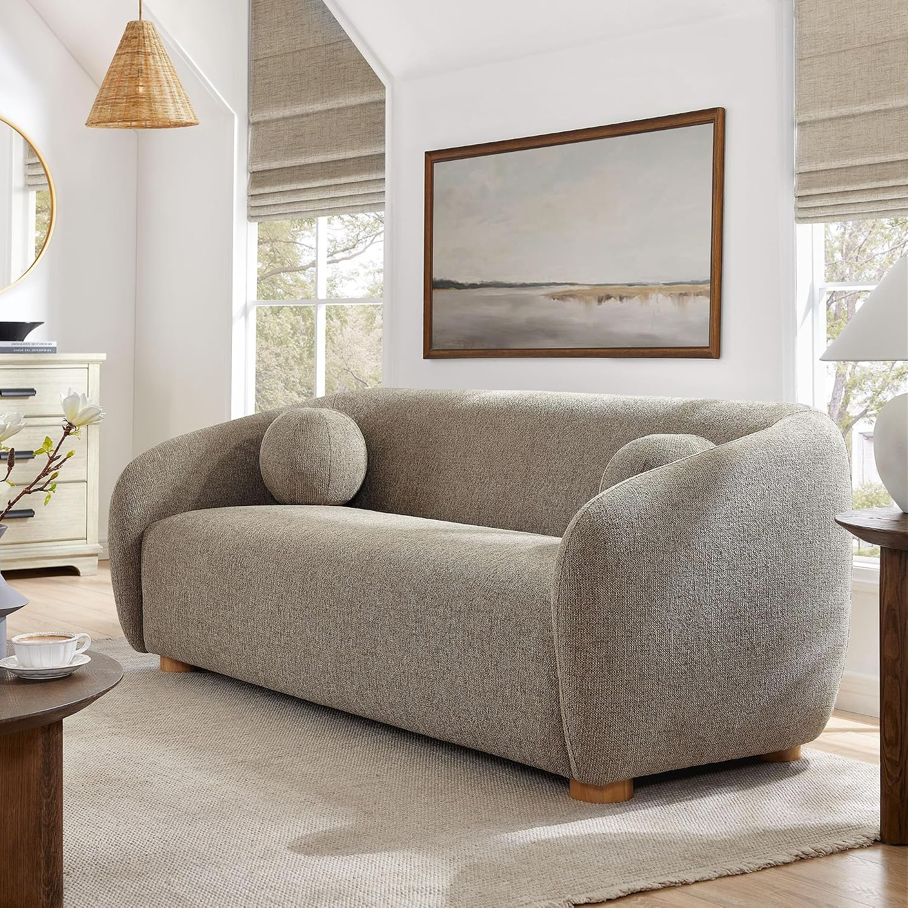
Modway Holland Curved Back Sofa
Shop on Amazon18. Choose a Deep Sofa for Maximum Comfort
If your living room revolves around lounging, consider a deep sofa.
Deep sofas usually feature generous seat depths that let you stretch out rather than sit upright, generally somewhere between 23 and 27 inches of seat depth. The best ones are really made for sinking into.
I would choose this style for a family room, movie room, or relaxed living space. Just remember that very deep seating can feel uncomfortable for shorter people who prefer their feet firmly on the floor.
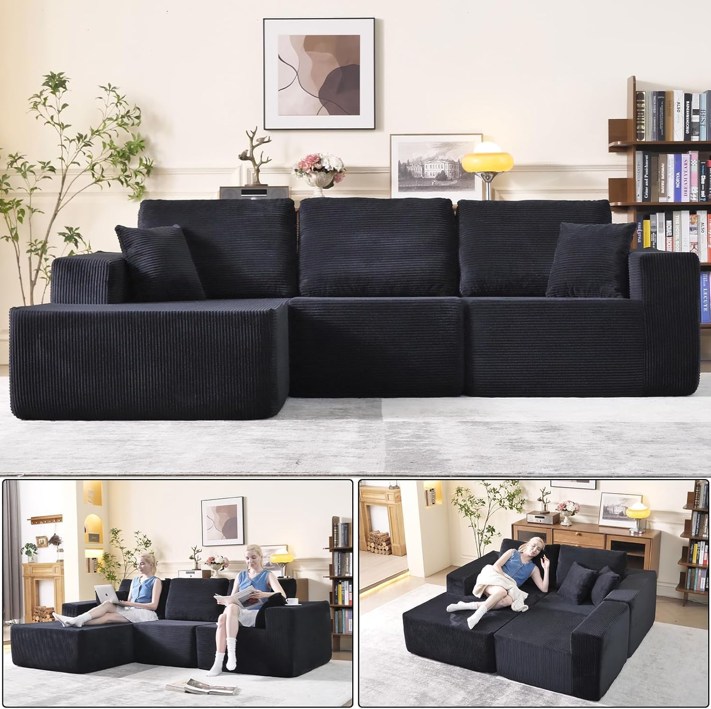

19. Try a Warm Neutral Sofa
A warm neutral sofa gives you one of the easiest foundations for a living room.
Think cream, oatmeal, beige, taupe, warm gray, or soft greige. These shades work beautifully with wood furniture, natural textures, woven baskets, patterned rugs, and earthy accessories.
I particularly like warm beige sofas because they allow you to change your accent colors without replacing the biggest piece of furniture in the room.
Add rust cushions in autumn, sage green in spring, or deep brown accessories when you want a richer look. The sofa simply keeps doing its job.
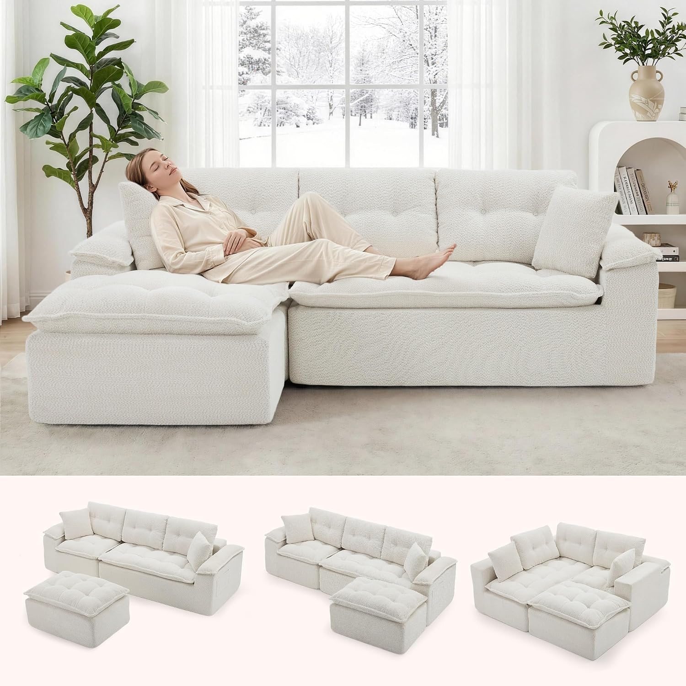
Korser Cloud Sectional Sofa
Shop on AmazonHow Do You Choose the Right Sofa Style?
Your lifestyle should influence the sofa style just as much as your decorating taste.
A structured sofa can create a polished, formal look. A deep sofa feels more relaxed and encourages lounging. A sectional creates a natural gathering point, while a loveseat works beautifully in smaller rooms.
There's a real difference between plush and firm seating worth considering here. Softer cushions encourage relaxation, while firmer seating can offer more support and hold its shape more easily over time.
I always think about the "real life test." Imagine yourself sitting on the sofa after a long day. Will you sit upright? Stretch your legs out? Curl up in the corner? If you already know the answer, choose a sofa that supports that habit.
Now let's get into the fun part.
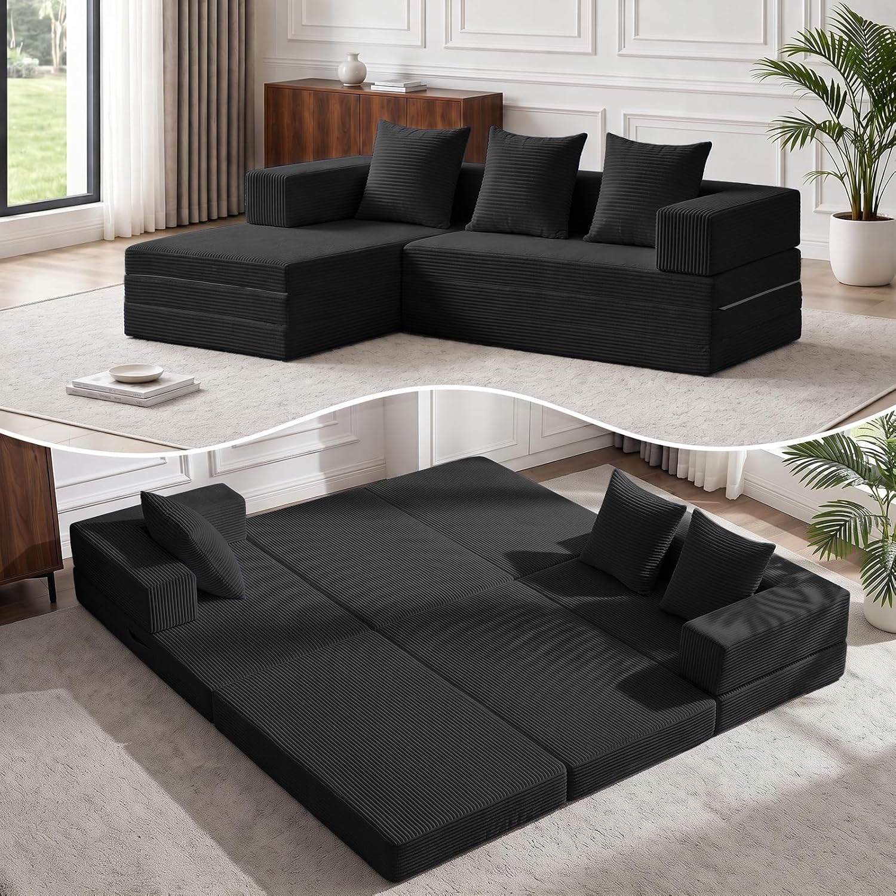
Modular Sectional Sofa
Shop on AmazonThink About Sofa Size and Proportion
A sofa should relate to the size of your room. A huge sectional can look fantastic in a large open living room but overwhelm a compact apartment.
Small sofas can actually create more breathing room. Sofas around 60 to 70 inches wide tend to work particularly well in small spaces while still giving the room a strong visual anchor.
Scale matters beyond the sofa itself too. Your coffee table, rug, side tables, artwork, and lighting should all relate to the sofa rather than compete with it.
Scale and proportion really are the fundamental elements behind rooms that look balanced and effortless.
That idea guides many of my favorite sofa ideas. The sofa does not need to dominate the room. It simply needs to belong there.
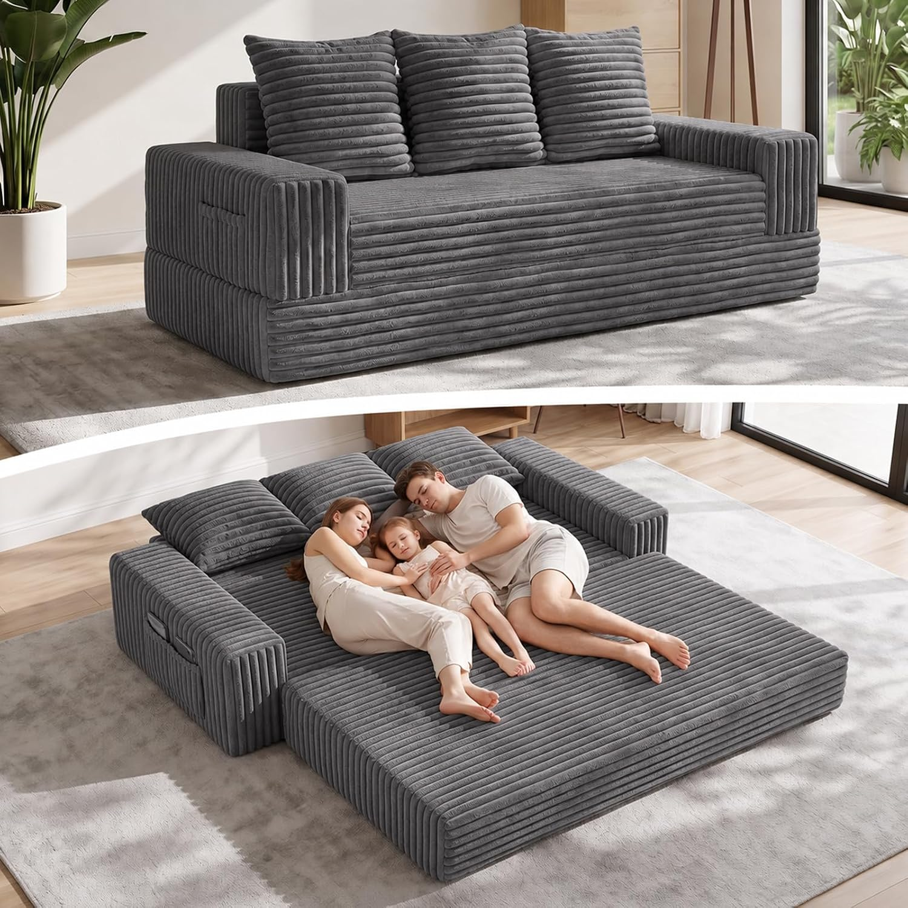
Compact 70-Inch Convertible Sofa
Shop on AmazonWhat Makes a Good Sofa for Your Living Room?
Before looking at individual sofa ideas, think about how you actually use your living room. Do you stretch out for movie nights, entertain friends, curl up with a book, or use the sofa as your unofficial home office?
It's worth thinking about function first and choosing a sofa according to how you actually plan to use the space, envisioning yourself in it and picturing how you'll actually use the piece day to day.
That advice sounds simple, but it solves a surprisingly common decorating problem. A beautiful sofa can still frustrate you if you cannot sit comfortably or move around it easily.
I also recommend measuring the room before falling in love with a particular design. Use painter's tape on the floor to mark the sofa dimensions. You can then walk around the outline and see whether the proportions actually work.
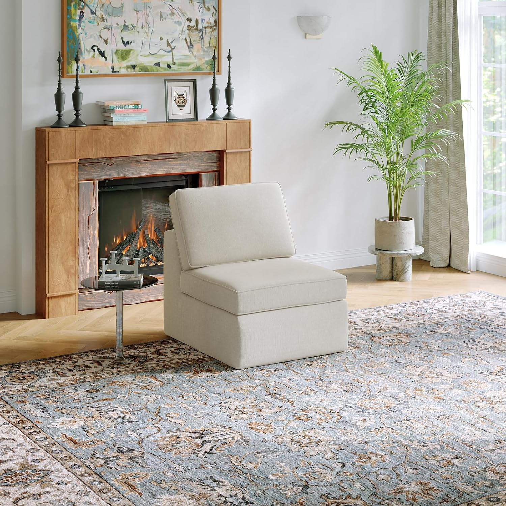

Final Thoughts on These 19 Sofa Ideas
The right sofa can completely change the personality of a living room. You can create a warm space with a cream or beige sofa, a relaxed family room with a sectional, a sophisticated interior with chocolate brown upholstery, or a bold statement room with a sculptural shape.
My biggest takeaway from these 19 sofa ideas is simple: choose for the way you live first and decorate around that choice second.
Measure the room. Think about comfort. Consider the upholstery. Look at the proportions. Then bring in the personality.
And please, sit on the sofa before buying it if you can. Sit normally, slouch a little, stretch your legs, and test it like you actually live there.
After all, your sofa has one very important job.
It needs to make you want to stay, and want to come back to it again tomorrow, and the day after that, for years rather than just one good photo.